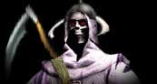
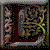
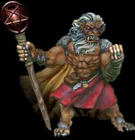
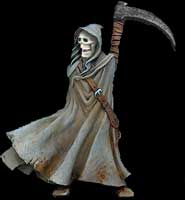

l
y a de cela très longtemps, les dieux se disputaient la terre afin
d'y régner. Les combats étaient d'une telle violence que les
habitants de la terre en souffraient énormément. Il y avait
plusieurs combats, dans le ciel comme sur terre, durant le jour
comme la nuit. Personne n'était en sécurité. Le combat des dieux
allait bientôt tirer à sa fin. Deux dieux anciens décidèrent de
mettre un terme à la terreur qui régnait. Ils arrivèrent dans ce
monde ayant pour but de vaincre et de chasser tous les autres dieux
en conflit. Un combat d'une extrême intensité débuta. Hai, dieu
guerrier, ainsi que son frère Yah, dieu de la sagesse et de la
magie, arrivèrent suivis d'une armée d'archanges. Le combat fut sans
pitié. Dans un geste de désespoir, les dieux, autrefois rivaux, se
regroupèrent entre eux dans le but d'arrêter les dieux jumeaux. Il
était déjà trop tard. Hai repoussa les dieux dans le centre de la
terre et Yah scella magiquement toute sortie possible. La magie de
Yah était telle que les dieux étaient maintenant prisonniers pour
l'éternité. Le calme apparut sur terre pour la première fois en deux
mille ans. Les dieux jumeaux décidèrent de rester dans ce monde afin
d’empêcher tout autre dieu de venir le perturber de nouveau. l
y a de cela très longtemps, les dieux se disputaient la terre afin
d'y régner. Les combats étaient d'une telle violence que les
habitants de la terre en souffraient énormément. Il y avait
plusieurs combats, dans le ciel comme sur terre, durant le jour
comme la nuit. Personne n'était en sécurité. Le combat des dieux
allait bientôt tirer à sa fin. Deux dieux anciens décidèrent de
mettre un terme à la terreur qui régnait. Ils arrivèrent dans ce
monde ayant pour but de vaincre et de chasser tous les autres dieux
en conflit. Un combat d'une extrême intensité débuta. Hai, dieu
guerrier, ainsi que son frère Yah, dieu de la sagesse et de la
magie, arrivèrent suivis d'une armée d'archanges. Le combat fut sans
pitié. Dans un geste de désespoir, les dieux, autrefois rivaux, se
regroupèrent entre eux dans le but d'arrêter les dieux jumeaux. Il
était déjà trop tard. Hai repoussa les dieux dans le centre de la
terre et Yah scella magiquement toute sortie possible. La magie de
Yah était telle que les dieux étaient maintenant prisonniers pour
l'éternité. Le calme apparut sur terre pour la première fois en deux
mille ans. Les dieux jumeaux décidèrent de rester dans ce monde afin
d’empêcher tout autre dieu de venir le perturber de nouveau.
Durant cette période de paix, les dieux jumeaux côtoyèrent les
différents peuples. Ils leurs apprirent l'art de la magie et
plusieurs autres connaissances. Yah était très souvent avec les
elfes. Il adorait leur capacité à faire de la magie. Il prit même
sous son aile plusieurs individus, à qui il apprit les rudiments
avancés de la magie. Ce groupe était composé de cinq apprentis. L’un
d’eux était un orc nommé Burok, un des rares de sa race à préférer
la magie aux combats. Yah finit par trouver épouse. Une saison passa
et un enfant était attendu. Pour la plus part des apprentis, la
nouvelle fût bien accueillie, sauf peut-être pour Burok. Sa soif de
connaissance était énorme mais Yah avait une nouvelle préoccupation,
son fils venait de naître. Cet enfant, fils d'un dieu, avait des
pouvoirs magiques jamais égalés dans ce monde jusqu'à maintenant.
Une nouvelle race était née, celle des génies.
Hai suivit l'exemple de son frère. Il partagea la vie des différents
peuples de ce monde. Il passa beaucoup de temps avec les humains,
les nains, les centaures, les orcs et les hobbits. Il leur appris à
améliorer la façon de construire des maisons, à utiliser la pierre
dans leurs constructions. Il leur enseigna l'art de forger le métal,
ainsi que de nouveaux alliages inconnus jusqu'ici. Plusieurs membres
de la race des cyclopes le suivaient partout. Il aimait ce peuple
fort et combattant. Il enseigna à ceux qui le suivaient certaines
tactiques militaires qu'ils avaient utilisées pour battre les autres
dieux. Arrivé chez les amazones, il passa beaucoup de temps avec ce
peuple.
Retournant chez les siens, Burok était resté sur sa faim lorsque Yah
avait décidé de se consacrer à l'éducation de son fils. Il voulait
en connaître plus, augmenter son pouvoir. Il commença à expérimenter
un côté de la magie que Yah ne lui avait pas apprit. Il usa d’une
magie de destruction et de transformation de la vie. Son pouvoir
croissait énormément. Il réussit à croiser magiquement certains de
sa race avec des créatures ailées. Les gargouilles furent alors
créées. Il en forma une armée. Burok se sentait puissant. Après
avoir dévasté plusieurs villages et montré que son unique but était
de régner sur le monde, les dieux jumeaux décidèrent d’arrêter ses
élans de folies. Un combat sans merci s’enclencha. L’armée de l’orc
résistait ce qui surprit les dieux. Obtenant de l’aide de plusieurs
races, ils parvinrent tout de même à le battre.
Burok fut puni, Yah le dépourvut de son pouvoir et le condamna à
errer dans la nuit car la simple vue du soleil le tuerait. Le dieu
mage retira à tous les orcs la possibilité de faire de la magie. Hai
ordonna l'exécution des dernières gargouilles encore en vie. Seuls
quelques individus réussirent à s'enfuir.
Les temps de paix sont rares. Peu après une période de prospérité de
la part de tous les peuples de la terre, des conflits entre les
différentes races éclatèrent. Les dieux observèrent mais choisirent
de ne pas intervenir.
Hai quitta le royaume des amazones pour parcourir le monde et
imprégner les différentes races de son savoir. Il a instauré à
travers le monde un moyen plus démocratique de déterminer un roi
dans les différents royaumes qu'il a visités. Il a passé beaucoup de
temps chez les elfes nobles, une race qu'il connaissait peu. Il a
été surpris par leur immense faculté d'apprentissage. Il a regroupé
leur meilleur combattant pour les instruire dans l'art du combat.
Yah de son côté a passé beaucoup de temps avec son fils Yahvé au
royaume des génies. Cette race a profité des enseignements du dieu
et elle est devenue maître incontesté en matière de magie. Pendant ce temps, une nouvelle menace planait sur ce monde. La
mort elle-même rôdait. Le peuple des morts avait accru sa puissance.
Ils avaient acquis de grands  pouvoirs en magie et au combat. Bien que désorganisé au début, un nouveau chef du nom de Carcassos apparut et cette race devint une réelle menace pour les autres. Carcassos aimait la mort et il haïssait les vivants. Il était un grand nécromancien du temps de son vivant, mais maintenant qu'il était mort, il était encore plus puissant. Il regroupa une armée de mort-vivant et attaqua des villages isolés. Chaque victime était un nouveau soldat pour son armée. Leur grande force ne venait pas nécessairement de leur habileté au combat, mais plutôt au fait qu'ils étaient impossibles à tuer...Disposant maintenant d'une armée impressionnante, le mort-vivant
sema la terreur un peu partout à HainyaH. Lorsqu’il s’attaqua enfin
à la cité des humains, Hai et Yah intervinrent une fois de plus. Sur le champ de bataille, Carcassos savourait déjà sa victoire
quand le temps sembla soudain s'arrêter, une brume venait ralentir
son armée en mouvement. Tout à coup, une immense muraille de pierre
s'éleva autour de la cité. Au loin, une lueur blanche approchait,
c'était Yah. Le dieu se tenait seul sur la colline. Voyant que la
cité était maintenant inaccessible et ne pouvant fuir nulle part,
Carcassos lança son armée contre le dieu isolé. D'un geste de la
main, Yah fit tomber du ciel de larges pierres en feu qui vinrent
écraser les morts. Tout en s'avançant, Carcassos vit une deuxième
lueur blanche approcher. Hai était venu rejoindre son frère. Il
n'était pas seul, un groupe impressionnant d'elfes nobles, de
cyclopes et quelques centaines d'archanges étaient avec lui. Avec
l'ordre de Hai, les troupes lancèrent l'assaut. Les morts furent
foudroyés les uns après les autres. Carcassos fut fait prisonnier.
Lorsque les archanges le conduisirent auprès des dieux, un étrange
phénomène se produisit. Un portail magique s'ouvrit, des éclairs de
flamme sortirent du portail et vinrent paralyser les gardiens. Au
grand étonnement de Carcassos, un large bras rouge sortit du portail
et attira le chef des morts à l'intérieur. Yah et Hai accoururent
vers le portail, mais celui-ci disparut... La paix s’installa de nouveau pour une période plus ou moins
courte. Pourtant, ces temps paisibles allaient bientôt être
perturbés.
 es dieux étant occupés à parcourir le monde, une créature immonde en profita et sortit de son antre. Le pustuleux Mop n'avait qu'une idée en tête, il voulait mettre la main sur une des pierres magiques appartenant aux nains. Mop, bien que pas trop malin, arriva à entrer dans la grande cité sous les montagnes des nains. Il réussit à se faufiler à travers les couloirs et à s'approcher de la salle des pierres magiques. Il passa plusieurs jours à attendre le bon moment. À un moment où il n'y eut personne, il entra dans la salle et prit une des pierres.Mop ne savait pas très bien à quoi servait cette pierre, il l'avait
choisi uniquement car elle était très brillante. Cette pierre renfermait
une grande puissance car elle avait déjà appartenue au démon Brec
Kherr. Ce démon a été banni par les dieux et est présentement enchaîné
au centre de la terre. Mop s'aperçut que quand la pierre était secouée,
elle brillait encore plus. Cette pierre absorbait la lumière. Il la
secoua de plus en plus et tout à coup, le monde s’assombrit
complètement. Mop causa une panique extrême chez les habitants du
monde. Il avait provoqué l'apparition soudaine de l'ère sombre. Voyant que la lumière avait disparu, les dieux Hai et Yah
cherchèrent la cause. Hai trouva en premier le coupable. Avec une
force incroyable, il réduit en miette Mop. Il ramassa la pierre et
alla consulter son frère afin d'inverser le processus. Yah
l’analysa, il la déposa sur le sol, lança quelques incantations et
de nombreux éclairs de lumière jaillirent de ses mains. Il les lança
contre la pierre qui se fendit en deux morceaux. La lumière envahit
le ciel et le jour devint clair comme avant. Le monde fut sauvé… du
moins c’est ce que tout le monde pensa. Les pierres que les dieux ont laissées au sol, les pensants
détruites, ont été ramassées. Burok, que tous croyaient mort, prit
les pierres et les emmenèrent dans sa  grotte. Ces pierres allaient être les pièces maîtresses de son instrument de vengeance contre les dieux. Bien que dépourvu de magie, il avait gardé le savoir et les connaissances du passé. Il avait réussi à amasser au fils des ans assez de pierres magiques afin de créer un portail. Ce portail allait servir de porte d’entrée à un puissant démon : Math’Barr. Il avait réussi à convaincre Burok de le faire entrer dans son monde afin d’assouvir sa vengeance. Il avait réussi à sauver Carcassos lors de sa défaite. La seule chose qu'il ne pouvait pas faire était d’entrer dans ce monde. Mais Burok lui fit ce cadeau.L’orc termina le portail et le mit en marche. Des vibrations se
firent sentirent aux quatre coins du monde. On vit apparaître le
nécromancien Carcassos et ensuite un vent glacial empli l’air. Des
nuages sombres apparurent et plus un seul son ne se fit entendre.
Math’Barr venait d’entrer dans ce monde. La mort elle-même n’aurait
pas été pire. Le démon ne tarda pas, il chargea ses émissaires d’aller
rassembler une grande armée. Afin de convaincre les orcs de le
suivre, Math’Barr leur enseigna son art de la magie. Une magie noire
et mortelle. Il offrit cette forme de magie à toutes les races qui
étaient prêtes à la suivre. Les gargouilles qui avaient  survécues allèrent rejoindre les forces du mal. Math’Barr réussi à convaincre les Elfes noirs de se joindre à lui en disant que les dieux avaient toujours favorisés les elfes nobles à leur dépend et que les choses devaient changer. Le démon réussi même à convaincre plusieurs tribus de cyclopes. Carcassos, pour sa part, alla de nuit dans le champ de bataille où il avait connu la défaite. Il réussit à faire revenir à la vie une bonne partie de son armée. Son geste ne passa pas inaperçu car du haut de sa tour, le sage Enric vit ce qui ce passa. Aussitôt, des messagers partirent quérir de l’aide.La dernière bataille que les humains avaient subie avait été une
attaque surprise, mais cette fois-ci, les renforts arrivaient de
partout. Le combat qui se préparait allait être d’une violence
extrême. Les humains, ne voulant plus subir d’assaut semblable, ont
élaboré de nouvelles techniques de combat. Avec l’aide des centaures
qui ont habité la cité durant la période de reconstruction, ils ont
réussi à développer une cavalerie hors du commun. De nombreux
groupes d’attaquant arrivaient de partout. Les champions elfes
nobles arrivaient avec des apprentis prêts et motivés au combat. Les
nains, habitants non loin, s’ajoutèrent au rang des combattants et
ensuite arrivèrent par petit groupe des représentants de la race de
cyclope - groupe fidèle à Hai - et des amazones. Un messager annonça
que les génies étaient en route et qu’ils étaient accompagnés de Yah
lui-même. Le moral de la population était à son meilleur. Avec
l’aide d’un dieu, personne n’avait peur de perdre ce combat. Pendant ce temps, les forces de Math’Barr grossissaient beaucoup.
Le démon avait réussi à faire d’un groupe de vampires, des
combattants sans peur et d’une cruauté inégalée. Les vampires
avaient absorbé de l’énergie venant du mal lui-même. Leurs yeux
commencèrent à se gorger de sang et leur soif de combat devenait
impossible à assouvir. Pour ce combat, les troupes n’avaient plus de
crainte car maintenant ils avaient leur arme contre les dieux, ils
avaient Math’Barr le démon. D’autant plus que la venue en ce monde
de ce démon était inconnue des dieux ou de leurs alliés. L’élément
de surprise allait jouer en leur faveur. L’heure de l’affrontement était proche. Les troupes sombres ont
débuté leur marche vers la cité humaine. Jamais on avait vu autant
de gens prêts au combat. Même l’armée que Burok avait jadis formée
pour régner sur le monde semblait petite comparé aux forces
présentes en ce moment. Math’Barr resta en retrait, il ne voulait
pas encore annoncer sa présence. Les troupes de Carcassos ont été
les premières à arriver à la cité. Le spectacle qui suivit aurait
fait rebrousser chemin à n’importe quelle armée. Yah s’éleva de
toute sa splendeur et une immense muraille de granite s’éleva d’un
bout à l’autre du champ de bataille. Un nombre incalculable
d’archers de toutes races avancèrent à la muraille et se mirent en
position. Un groupe de génies qui les suivaient, s’occupaient de
transformer leurs armes en arc d’ébène. L’armée noire se prépara à
l’attaque. Les pièces de l'échiquier étaient maintenant en place et
le signal de départ n’allait pas tarder à se faire entendre. Ce signal prit une forme inattendue. Une brume noire descendit
sur toutes les troupes de l’alliance, y compris Yah. Une aura noire
enveloppait maintenant tout le monde. Bien que cette aura ne semble
rien faire de mal, les mages se sont aperçus rapidement qu’ils ne
pouvaient plus lancer de sort sur leurs alliés ou ennemis. Le sol
commença à vibrer. Un souffle froid passa. Une forme noire et
immense sortie de derrière la colline. Math’Barr s’avança, suivit de
Burok et Carcassos. Il jeta un regard rempli de haine à l’endroit de
Yah et lui dit : " Prépare-toi à vivre la fin de ton règne, car ton
pire cauchemar est arrivé et rien ne va pouvoir m'arrêter." Yah,
bien que surpris de l'apparition du démon, rétorqua: "Bien des gens
de ta race ont essayé de me vaincre et tous ont connu la perte.
Prépare-toi à subir le même sort qu'eux." Les assauts pleuvaient de toutes parts mais les deux camps
étaient toujours debout. Trouvant que le combat durait trop
longtemps à son goût, Math'Barr s'avança pour participer. Son seul
regard faisait fuir les combattants. Des images de cauchemar
emplissaient leurs têtes. Voyant cela Yah lança une charge
électrique sur Math'Barr qui le propulsa plusieurs mètres en
arrière. Plus en colère que jamais, le démon lança une série de
boules de feu gigantesque sur le dieu. Celui-ci encaissa sans
problème la première, la deuxième, troisième. Il oscilla sur la
quatrième, mais nul en ce monde est de taille à rivaliser en magie
contre Yah et Math'Barr s'en aperçu. Math'Barr fonça sur le dieu. Le
corps à corps était moins du ressort de Yah. Le vent glacial qui rodait fit rapidement place à un vent chaud
venu du sud. Un nouvel espoir arriva, le dieu Hai arrivait à vive
allure. Il était accompagné d'un très grand nombre d'archanges ainsi
que plusieurs autres combattants des différentes races venues donner
leur appui. Voyant cela, Math'Barr frappa Yah de son arme qui
bascula contre la montagne et se tourna afin d'affronter Hai. Le sol
tremblait sous la force du combat. Math'Barr était puissant mais il
s'aperçut que la force au combat de Hai était supérieure à la
sienne. Seul espoir, utiliser la magie. Les boules de feu,
inefficaces contre Yah, avaient réussi à ébranler Hai. Mais ce fut de
courte durée car Yah se dressa sur la montagne, un énorme trou noir
se formait au-dessus de sa tête. Toute magie lancée était absorbée
par ce trou. Bientôt les génies avaient retrouvé la possibilité de
faire de la magie. Les sorts de Math'Barr avaient disparus. Il ne
tarda pas à s’enfuir, laissant son armée en déroute. Les dieux et leurs alliés reprirent le dessus et écrasèrent les
troupes noires. Le combat avait prit fin et l'ampleur des dégâts
était énorme. Maintenant les dieux avaient rencontré une menace qui
leurs était inconnue jusqu'à maintenant. Math'Barr reviendra. Il a de
puissants alliés et sa haine envers les dieux ne cessera de
s'amplifier. Il faudra s'attendre au pire et s'y préparer car la
revanche risque d'être cinglante. Math'Barr n'a qu'a bien se tenir car Hai et Yah partent à la chasse
au démon… Écrit par Hai et Yah
Plusieurs ères s’écoulèrent ensuite, laissant des traces de
nouvelles guerres. Des alliances se firent entre certains membres
des différentes races pour se liguer contre d’autres groupes. Des
rois furent nommés et des seigneurs furent louangés pour leurs
exploits. D’autres furent pointés du doigt pour leurs actions
déloyales. Des seigneuries furent détruites alors que d’autres
pouvaient prospérer en toute quiétude. Hai et Yah n’eurent toutefois
pas à se mêler de ces querelles qui n’ébranlaient en rien
l’équilibre du monde d’HainyaH. Dernièrement, ce même monde sombra lentement dans l’abandon. Le peuple n’avait plus personne vers qui se tourner et les dieux jumeaux ne répondaient plus à leurs appels. C’est ainsi qu’un nouveau dieu, appelé Shardok, fit son entré sur cette terre.  De son antre, il ne pouvait plus supporter de regarder cette
déchéance évoluer sans rien faire. Il parvint à s’entretenir avec
les dieux jumeaux et ceux-ci lui permirent de prendre le contrôle de
la situation. Au bout de peu de temps, toutes les communautés
apprirent à aimer ce nouveau dieu. Shardok avait redonné espoir à
ceux qui s'étaient détournés de la voie de la vérité et qui étaient
à présent son peuple.
De son antre, il ne pouvait plus supporter de regarder cette
déchéance évoluer sans rien faire. Il parvint à s’entretenir avec
les dieux jumeaux et ceux-ci lui permirent de prendre le contrôle de
la situation. Au bout de peu de temps, toutes les communautés
apprirent à aimer ce nouveau dieu. Shardok avait redonné espoir à
ceux qui s'étaient détournés de la voie de la vérité et qui étaient
à présent son peuple.
Toutefois, comme il fallait s’y attendre, de nouvelles querelles
semblaient déjà se mettre en place. Shardok ne pourra pas y
échapper, il devra gérer le tout. Dans sa bonté, il voulut donner
une chance à toutes les races de parvenir à se faire une place au
sein de ce monde. Douze races parcourront ces terres : les amazones,
les centaures, les elfes nobles, les elfes noirs, les génies, les
gobelins, les hobbits, les humains, les nains, les orcs, les
cyclopes et les elfes des bois.
Shardok décida de redonner une chance aux gargouilles et aux
morts-vivant. Les lycans et les maléas vinrent aussi se joindre au
lot.
En ce jour zéro de la nouvelle ère, l'espoir, la sérénité, le
respect et les ambitions sont enfin de retour dans le cœur des
seigneurs des terres d’HainyaH.
La fertilité des terres, la richesse des mines, la beauté des forêts
et la construction de nouvelles seigneuries marqueront le début de
cette nouvelle ère : ainsi débute l’ère de la réincarnation. Écrit par Zesstra |